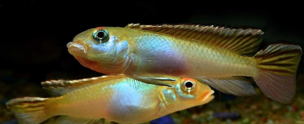

Systématique
- Ordre : Cichliformes
- Famille : Cichlidae
- Genre : Nanochromis
- Espèce : N. parilus
- Auteur : Roberts & Stewart, 1976

Nanochromis parilus est un petit cichlidé rhéophile originaire du bassin du fleuve Congo. Longtemps confondu avec Nanochromis nudiceps dans le commerce aquariophile, il s'en distingue par des motifs spécifiques sur les nageoires, notamment une bordure supérieure blanche ou argentée très marquée sur la nageoire dorsale et la partie supérieure de la caudale.
Le mâle atteint environ 7 à 8 cm, tandis que la femelle est plus petite, mesurant entre 5 et 6 cm. Son corps est élancé, fusiforme, de couleur gris-bleuté à argenté avec des reflets irisés. La ligne latérale est située très haut, près de la nageoire dorsale. C'est un poisson vif qui possède une personnalité affirmée malgré sa petite taille.
C'est un poisson benthique qui vit en étroite relation avec le substrat. Territorial et parfois agressif envers ses congénères, Nanochromis parilus forme des couples monogames souvent instables si l'aquarium n'est pas assez spacieux. Il a l'habitude de creuser le sable pour aménager ses cachettes sous les roches ou les racines.
En aquarium, il nécessite un sol en sable fin et de nombreuses cavités. Contrairement à d'autres cichlidés nains, il peut être assez belliqueux, surtout en période de frai. Il est préférable de le maintenir en bac spécifique ou avec des poissons de banc rapides occupant la partie supérieure (Alestidae par exemple). Une eau bien oxygénée et un certain courant simulant son habitat naturel sont fortement recommandés.
Mode : Ovipare, pondeur sur substrat caché (cavitole).
La reproduction suit le schéma classique des cichlidés fluviatiles africains. La femelle choisit une grotte ou une noix de coco et y dépose ses œufs au plafond. Elle prend en charge la ventilation et le nettoyage des œufs tandis que le mâle surveille les environs de la cavité.
Après l'éclosion, les larves sont souvent déplacées par la femelle dans des cuvettes creusées dans le sable. Les alevins atteignent la nage libre après environ une semaine. Ils sont alors protégés par les deux parents. Ils acceptent facilement les nauplies d'artémias ou le plancton de remplacement dès les premiers jours.
Dimorphisme sexuel : Le mâle est plus grand, plus svelte, avec des nageoires dorsale et anale plus effilées se terminant en pointe. La femelle est plus petite, plus trapue, et arbore un ventre rose violacé très marqué lorsqu'elle est prête à pondre. Les nageoires de la femelle sont plus arrondies.
Espérance de vie : 3 à 5 ans en aquarium.
Endémique du cours inférieur du fleuve Congo (République Démocratique du Congo), particulièrement dans les zones de rapides et de courants soutenus entre Kinshasa et Matadi.
Son habitat naturel est composé de fonds sableux parsemés de rochers. L'eau y est très oxygénée, neutre à légèrement acide, et la température reste relativement constante tout au long de l'année.
Répartition

Origine naturelle :
- Afrique Centrale : Bassin inférieur du fleuve Congo.
- République Démocratique du Congo et République du Congo.
Statut : Espèce non menacée mais dépendante de la qualité de l'eau du fleuve. Très prisée par les amateurs de cichlidés fluviatiles.
Paramètres de maintenance
Température : 24 à 27 °C.
pH : 6,0 à 7,5.
GH : 5 à 12 °dGH.
Courant : Modéré à fort (bonne oxygénation indispensable).
Volume conseillé : Minimum 80-100 L pour un couple.
Régime alimentaire
Régime : Omnivore à tendance carnivore.
Dans la nature, il fouille le sable à la recherche de petits invertébrés, de larves d'insectes et de crustacés.
En aquarium, il accepte les nourritures sèches de qualité (granulés coulants), mais sa santé et ses couleurs dépendent d'un apport régulier en vivant ou congelé (artémias, daphnies, vers de vase).